📈 Telemetry & Analysis
Analyze your driving data, find lap time, and optimize your performance
Sim Racing Telemetry (SRT)
Cross-platform telemetry with graphs, time-difference analysis, and track overlays. A comprehensive tool for understanding where you gain or lose time.
simracingtelemetry.comCoach Dave Delta
Telemetry, setups, reference laps, and AI-style insights for iRacing, ACC, F1 games, and more. Combines data analysis with coaching features.
coachdaveacademy.comJRT (Joel Real Timing)
Advanced timing and race-telemetry analysis, especially strong for endurance racing with tire-wear and stint-focused analytics.
joel-real-timing.comVRS Telemetry Logger
iRacing telemetry logger that feeds into the Virtual Racing School analysis platform for detailed lap and session breakdowns.
virtualracingschool.comGarage61
iRacing-focused telemetry and overlay-style data to a second screen or phone. Great for quick data access during sessions.
garage61.netPopometer
Visual telemetry with strong line-analysis capabilities for ACC, LMU, and other sims. Helps you understand your racing line in detail.
popometer.ioMoTeC i2
Professional-grade race telemetry software, used by many pro sim racers and real-world motorsport teams. The gold standard for data analysis.
motec.com.auStint Analyzer
Simple open-source tool for race stint and tire-wear planning. Essential for endurance racing strategy.
GitHub🎨 Overlays
In-game overlays for standings, fuel calculations, radar, and more
RaceLab
Modern overlay suite for iRacing, ACC, F1, AMS2, rF2, LMU with relatives, standings, fuel-calc, radar, boostbox, input-graph, and head-to-head comparisons.
racelab.appiOverlay
iRacing overlay collection featuring relatives, multiclass standings, boost, fuel management, Twitch chat integration, and in-game timers.
ioverlay.appKapps Overlays
Alternative iRacing overlay framework with many customizable widgets. Flexible and lightweight.
kapps.kutu.ruRacePulse
Real-time telemetry overlays for iRacing, LMU, F1-24/25 with rev lights, position tracking, and input graphs.
racepulse.racingSIMRacingApps
Web-based second-screen and overlay system for iRacing, ACC, AMS2, and F1 titles. Browser-based for easy setup.
simracingapps.comBo2-Official Overlays
Community overlay pack for iRacing built inside SimHub by benofficial2. Easy to share and customize with the SimHub ecosystem.
GitHub💻 Dashboards & Display Software
Dashboard apps, HUD displays, and the SimHub ecosystem
SimHub — F1 25 2026-Season Telemetry & Updated GT7 Format (June 2026)
SimHub has added support for F1 25's 2026 Season Pack telemetry format — available to everyone, whether or not you bought the expansion — so dashboards, LEDs and haptics work with the new active-aero cars from day one. Gran Turismo 7 telemetry is also updated to the latest format, adding native sway, surge, heave, lap time and kerb detection for haptics. Dashboards now install as packaged .simhubdash files.
simhubdash.com — UpdatesSimHub — Translation Assistant (April 2026)
SimHub's new Translation Assistant combines DeepL and Google suggestions to drive 80-90% UI localization across 15+ languages. The Swiss-Army-knife of sim racing software just got friendlier for non-English speakers. Dashboards, overlays, haptics, rev lights, LED strips, Arduino/Pi integration — all now accessible worldwide.
simhubdash.comRSS Ultimate SimHub Dashboard V020426 — Chrono v1.1 & Lift & Coast Colors
The Ultimate SimHub Dashboard for Race Sim Studio (V020426) added Lift & Coast on/off toggles for Telemetry and Browser layouts plus a configurable Lift & Coast colour (April 16 free update). Chrono Dashboard v1.1.0 ships alongside. Supported cars now span up to Formula Hybrid Alpine 2025, Formula Supreme, GT-M Protech P92 F6, Hyperion V8 and Furiano 96 V6.
racesimstudio.comDaniel Newman Racing SimHub Plugin v5.9 — LED & Lift & Coast Controls
The Daniel Newman Racing SimHub plugin shipped v5.9 on April 16 with new LED settings, a Lift & Coast on/off toggle and a global Lift & Coast colour. Bundled with the refreshed Chrono Dashboard v1.1.0 — one of the cleanest free dash setups available for iRacing, ACC and LMU.
danielnewmanracing.comNeoRed Plugin & Dashboard for LMU — v1.6.0.1
The popular NeoRed SimHub plugin and dashboard for Le Mans Ultimate updated to v1.6.0.1 on April 15. Continues to be one of the go-to dashboards for the LMU community, with automatic online update built in.
community.lemansultimate.comCrewChief v4.19.1.42 — AC EVO v0.6 Ready
CrewChief rolled out v4.19.1.42 early April with AC EVO v0.6 compatibility fixes and ongoing refinements. If you've had issues since the update, verify you're on the very latest build — a small handful of users reported regressions that were quickly addressed on the forum.
thecrewchief.orgRSS Ultimate SimHub Dashboard — April 2026
Race Sim Studio has released the Ultimate SimHub Dashboard for April 2026, supporting virtually every RSS mod car up to Formula H. One dashboard, every RSS car — a huge time-saver for Assetto Corsa modders.
April 2026RS-Dash
Mobile (iOS/Android) and Windows app for telemetry and dash/HUD views. Supports ACC, AC, AMS2, and F1 titles.
rsdash.comLovely Dashboard
Dashboard framework for multiple sims, often paired with SimHub. Community-driven with many custom layouts available.
GitHub⚙ FFB Tuning & Haptics
Force feedback optimization, haptic feedback, and wheelbase tuning tools
irFFB
FFB-tuning profiles for iRacing that sharpen grip and feel cues. Fine-tune your force feedback for better road surface communication.
GitHubMAIRA (Marvin's Awesome iRacing App)
iRacing-specific tool that helps analyze and tune Force-Feedback settings. Often used alongside your wheelbase tuner for optimal FFB feel.
mairapp.comResize Raccoon
Suite for haptic-feedback optimization, FFB-tuning, and LED-control. Enhances the physical feedback from your sim rig.
GitHubMOZA Tuner
Official FFB tuning tool for MOZA Direct-Drive bases. Adjust force curves, damping, and other parameters for your MOZA wheelbase.
mozaracing.comSimagic Tuner
Official tuning tool for Simagic Direct-Drive bases. Configure FFB profiles and fine-tune your driving experience.
simagic.ccFanatec DD-Tooling
Official Direct-Drive tuning utilities from Fanatec for fine-tuning FFB on Fanatec wheelbases.
fanatec.com🎓 Coaching & Training
AI coaching, spotters, training platforms, and communication tools
Track Titan
AI-based overlay for ACC/LMU that highlights where you're losing time. Real-time coaching to improve your lap times.
tracktitan.ioVRS (Virtual Racing School)
Coaching platform with training modules, telemetry integration, and reference data. A complete learning environment for improving your driving.
virtualracingschool.comCrewChief
Text-to-speech spotter that calls positions, overtake-warnings, and messages for iRacing, AMS2, ACC, rF2, and more. Your virtual race engineer.
thecrewchief.orgGarage61 / Coach Dave / Popometer
These tools partly offer AI-style setup and FFB suggestions that adapt to your driving style, combining telemetry analysis with coaching.
garage61.netDiscord
The main platform for team and league communication, voice chat during races, and live coaching sessions in sim racing.
discord.com🚨 Race Control & Stewarding
Tools for league admins, race directors, and stewards
iRaceControl
A comprehensive race control tool for iRacing league admins and stewards. Features live track positions with track maps, incident logging for all cars, automated stewarding (warnings, drive-throughs, stop–go penalties, DSQ based on incident counts), a sequencer for automating pit open/close, random yellows, stage yellows and messages, pit-lane and pit-stop time logging, driver notifications, PDF race reports, and a StreamDeck plugin for quick actions. The CAS Community has adopted iRaceControl for the upcoming IEC (iRacing Endurance Championship) season.
iracecontrol.comRacey
An all-in-one race-day operations platform for iRacing and multi-sim leagues. Racey bundles four production surfaces into one command center: a live Race Control panel (flags, incidents, restarts, steward queue), automated scoring & standings with custom presets (F1, NASCAR, IndyCar, WEC), multiclass and drop weeks, AI-assisted stewarding (blind protest review, steward voting, AI case summaries, penalty ladders, appeals, and a searchable per-league precedent log), and six OBS broadcast overlays. Results import via CSV from iRacing, ACC, rFactor 2, AMS2 and more; a free tier covers one league with full analytics, Pro is $4.99/mo. Where iRaceControl focuses on live iRacing race control and stewarding, Racey aims to run the whole league operation end–to–end. See the full write-up below.
racey.gg🏁 Spotlight: Racey — Run Your League Like a Pro Operation
An all-in-one race-day operations platform for sim racing leagues
Most league software solves one piece of the puzzle — results in a spreadsheet here, a stewarding thread there, overlays cobbled together for the stream. Racey (racey.gg) takes a different approach: it bundles the entire race-day workflow into a single command center, built specifically for iRacing and multi-sim leagues that want to run like a professional operation. It is structured around four production-grade surfaces.
-
Race Control Panel Live session control on race day — flags, incidents, restarts, and the steward queue from one operator screen, with real-time updates pushed to every connected role.
-
Automated Scoring & Standings Drop in results and standings update instantly across drivers, teams, and championships. Custom scoring presets (F1, NASCAR, IndyCar, WEC), drop weeks, multiclass, and a per-point audit trail with integer-based math — no rounding drift.
-
AI-Assisted Stewarding Blind protest review, independent steward voting, AI-generated case summaries, penalty ladders, and a full appeals process. Every ruling lands in a searchable precedent log scoped to your league for consistent decisions.
-
Broadcast Overlays Six OBS browser sources — timing tower, standings, driver cards, incident ticker, battle tracker, and fastest-lap monitor — all updating in real time so the stream never goes stale.
Around those four pillars sit season and schedule management, registration workflows, roster and car-class control, and free, exportable analytics (driver trends, consistency indices, league-health and attendance metrics). Results import via CSV from iRacing, ACC, rFactor 2, AMS2 and other sims; drivers link by iRacing Customer ID, with deeper iRacing OAuth integration ready to switch on once iRacing reopens new client signups. Entry-fee collection runs through Stripe Connect with zero commission — payments route directly to the organizer, standard Stripe processing fees only.
Pricing is straightforward: a Free tier covers one league with unlimited drivers, seasons, events, full analytics, and basic stewarding; Pro at $4.99/mo (about $49.90/yr) unlocks unlimited leagues, the Race Control panel, AI-assisted stewarding, custom scoring, broadcast overlays, and Stripe Connect; an Enterprise tier adds org dashboards, white-glove migration, and custom integrations for multi-league organizations and broadcast groups. Driver accounts are free forever.
Racey sits naturally alongside the iRaceControl tool listed above rather than replacing it: iRaceControl is a focused, deeply iRacing-native race-control and auto-stewarding console (with a StreamDeck plugin), while Racey aims to be the connective tissue for the whole league — scoring, stewarding, registration, payments, and overlays under one roof, across multiple sims. Leagues that want a single operations hub will find Racey compelling; those who just need race-day control on iRacing may prefer iRaceControl. Many will happily use both.
⭐ Spotlight: iRacing Overlays — Our Own Free Broadcast Suite
A self-hosted, open-source overlay & race-control toolkit — built here and used to broadcast the CAS Community races
iRacing Overlays — the full broadcast & stewarding suite
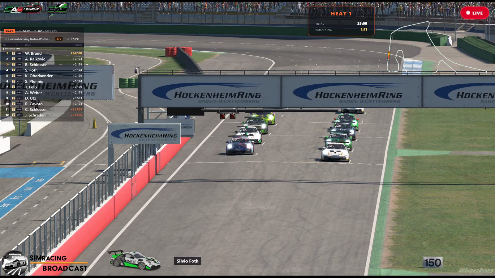
This is the engine behind our race streams: a collection of free, self-hosted broadcast overlays for iRacing, built with Python + Flask. Each overlay runs as a small local web server and is added to OBS Studio as a browser source — no subscriptions, no accounts, no cloud services. All telemetry is read locally from the iRacing SDK via pyirsdk, and nothing leaves your machine unless you explicitly switch on the optional public-sharing feature. A dozen-plus overlays run in parallel, each on its own port, and a small desktop GUI launcher starts, stops and monitors them with a click. It fits the same ethos as the rest of this site — independent, no ads, no tracking.
What's in the suite
Every graphic below is driven from live telemetry and runs entirely on your own PC. Add the ones you need to OBS; ignore the rest.
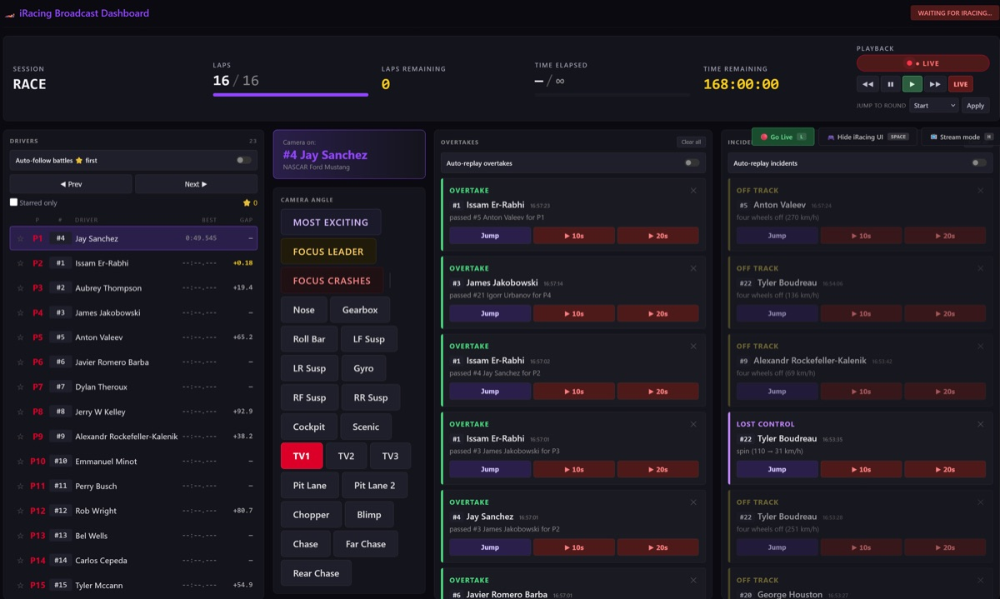
Broadcast Dashboard
The control center for the whole stream: live telemetry for every car, full camera control (Most Exciting, Focus Leader, Focus Crashes, per-component cameras), and automatic overtake & incident detection with one-click auto-replay. One director can run the broadcast while the action plays out, catching the moments that matter without watching every car.
localhost:5000 iracing_dashboard.py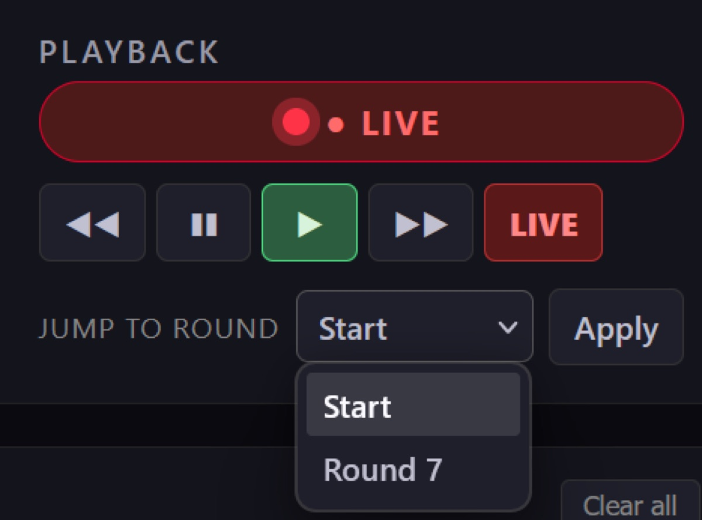
Instant-Replay Controls
Part of the dashboard: a transport bar that scrubs the iRacing replay without leaving the operator view — rewind, pause, play, fast-forward, and a Jump-to-Round selector to snap straight to the start of any race. The one-click replay buttons on the overtake and incident feeds drive this panel, so the director can roll a clean replay of the move that just happened.
localhost:5000 playback panel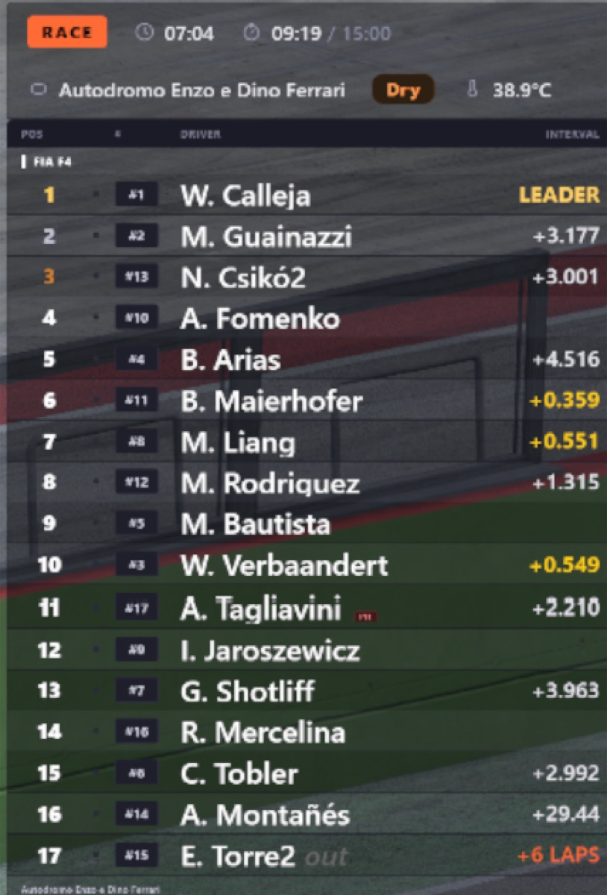
Live Standings Tower
The bread-and-butter timing tower: live order with a session-info bar, manufacturer brand logos and pit info. Toggle driver/team names, gap vs. interval and the speed column. Custom brand logos drop straight into a brands/ folder as SVGs.
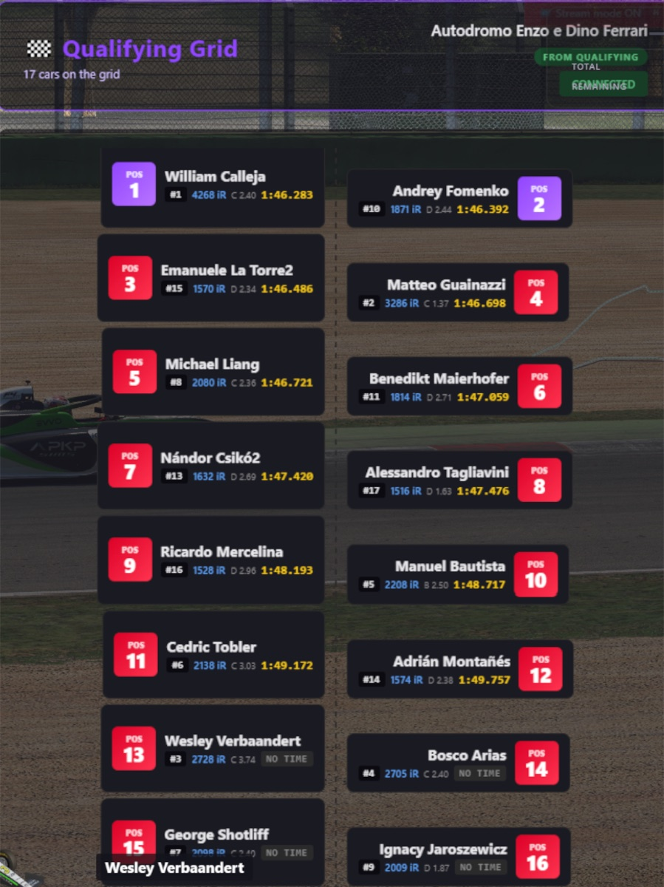
Qualifying Grid
A clean pre-race grid with colored car silhouettes, perfect for the build-up to lights out. Reads the qualifying order straight from the session so it is always correct, no manual entry.
localhost:5001 iracing_grid.py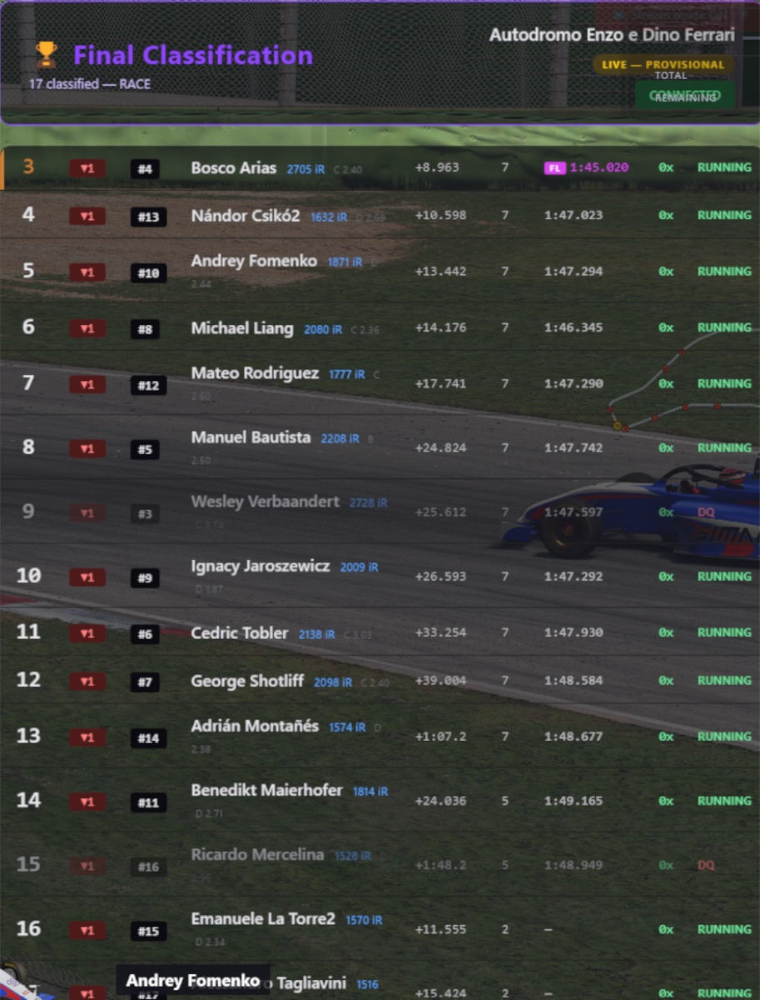
Race Results
The full classification at the flag — finishing order, gaps, incident counts and fastest lap — with a minimal “lite” variant for tighter layouts. Drops onto the post-race screen with zero data entry.
localhost:5002–5003 iracing_results.py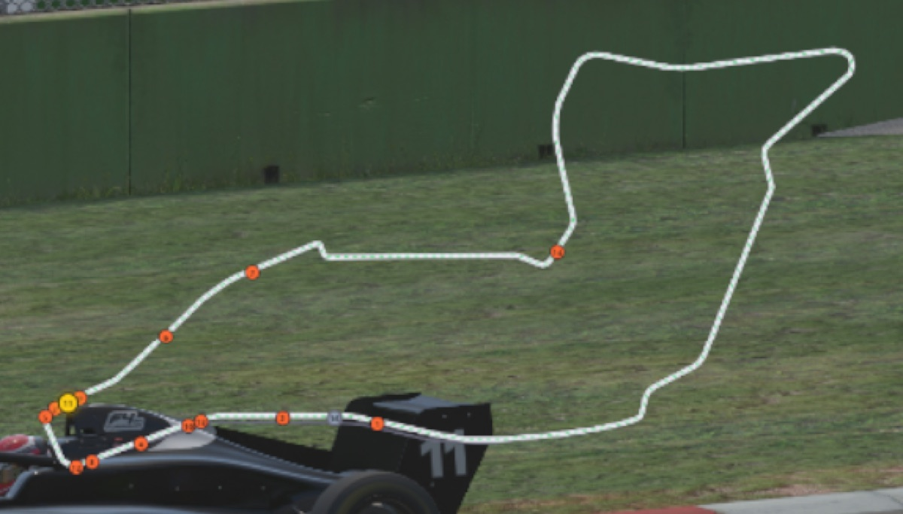
Offline Track Map
An SVG track map with live car dots that needs no iRacing login and no internet — geometry for ~300 track configurations is bundled as JSON. The overlay reads the track name from the SDK and loads the matching file. Sources: the SIMRacingApps track library (Apache 2.0) and OpenStreetMap (ODbL).
localhost:5007 iracing_trackmap.py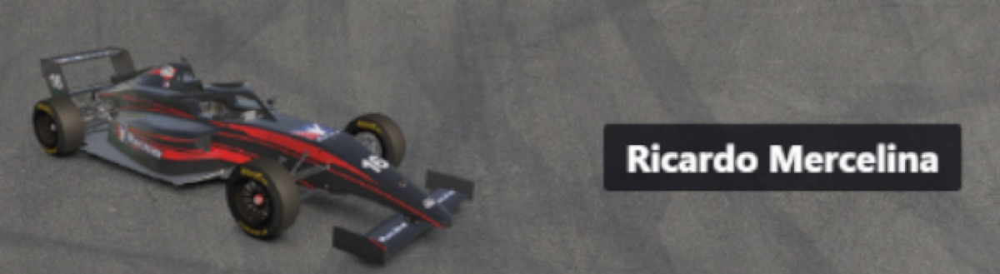
Livery & Driver Name
A 3D-rendered car plus the driver name of whoever is currently on camera — the broadcast lower-third that ties the picture to the timing. Updates automatically as the director cuts between cars.
localhost:5006 iracing_livery.py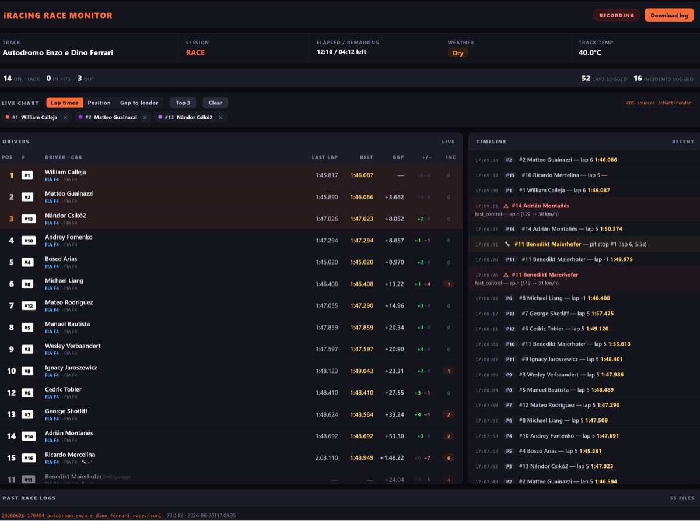
Race Logger
Writes one JSONL file per race — laps, pit stops, flags, penalties, incidents, positions and the final classification — and serves a full live race monitor: a drivers table plus an event timeline. Optional read-only public endpoints let Twitch/Discord viewers open a self-service view via a free Cloudflare Tunnel, with all admin endpoints staying local.
localhost:5009 iracing_race_logger.py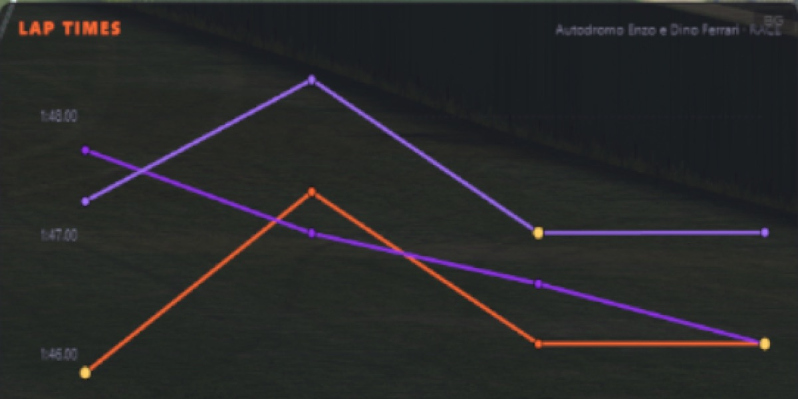
Live Lap-Time Charts
The race logger renders lap-time, position and gap charts that drop into OBS as their own browser source — here, several drivers' lap times traced over a race at Imola. Perfect for a stat-break bumper or a picture-in-picture corner that shows the race developing, all from the same local data.
localhost:5009/chart/render live charts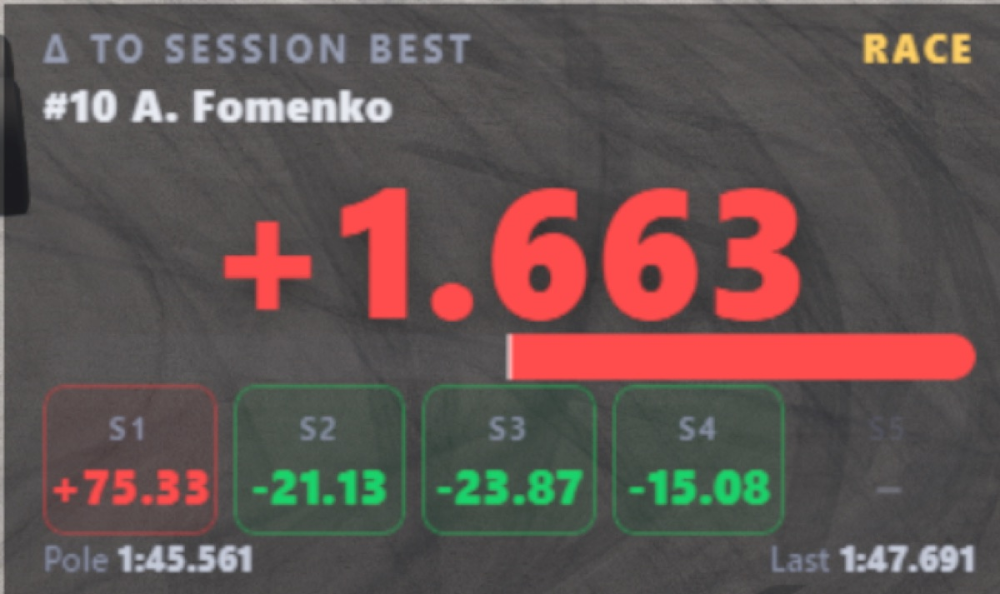
Quali Delta
A big, readable delta to the session best for the car on camera, broken down per sector (green for time gained, red for time lost) with the pole and last-lap reference times. Made for qualifying tension — viewers see at a glance whether a hot lap is up or down on the benchmark.
localhost:5014 iracing_qualidelta.py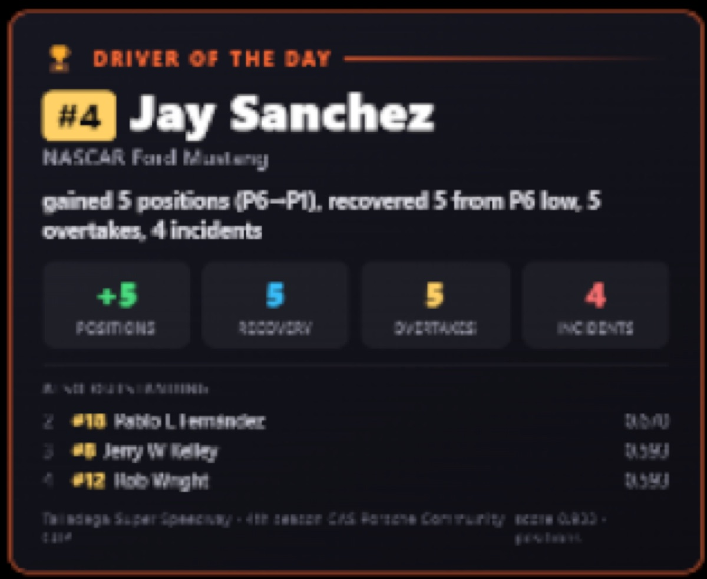
Driver of the Day
An automatic post-race award card: it scores the field on positions gained, recovery from a low point, overtakes and incidents, then crowns a Driver of the Day with the headline stats and a short runner-up list. A ready-made talking point for the cool-down show — no manual number-crunching.
localhost:5013 iracing_dotd_overlay.py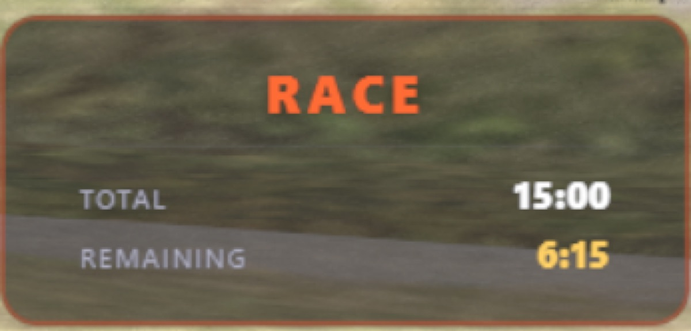
Session Info
A compact, always-transparent bar showing the session name plus total and remaining time (or laps) — so viewers tuning in mid-stream instantly know whether it is practice, qualifying or the race, and how much is left to run.
localhost:5011 iracing_session_info.pyLIVE / REPLAY Indicator
A small, always-transparent badge that flips between a red LIVE and a gold REPLAY depending on what the iRacing replay system is doing — so the audience is never confused about whether they are watching the action live or a recap. Sits in a screen corner and runs by itself.
localhost:5004 iracing_live_indicator.py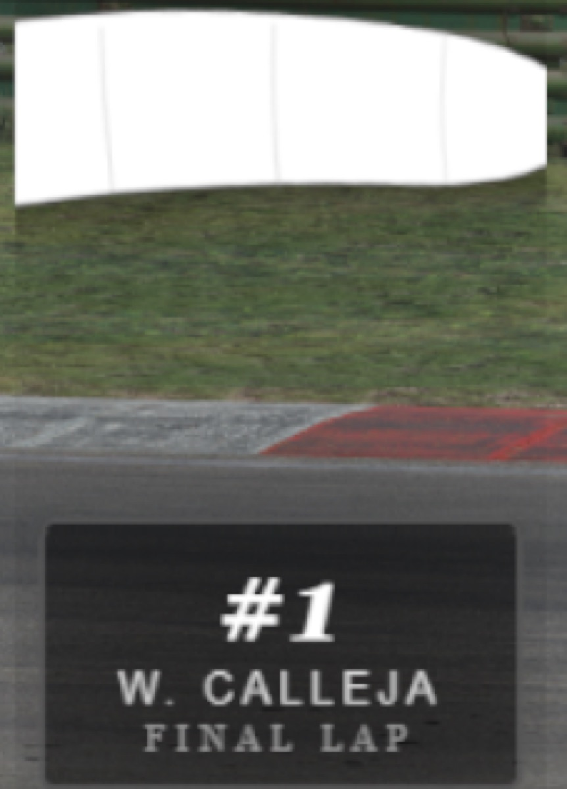
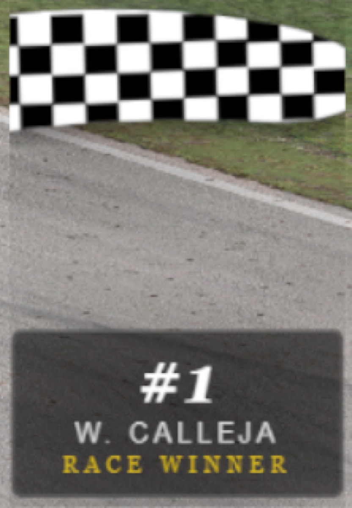
Flag Overlay
An always-transparent waving-flag graphic that tracks the session flag state — green, yellow, white and checkered. On the closing laps it pairs the white flag with a FINAL LAP nameplate for the leader, then the checkered with a RACE WINNER plate at the flag — an instant, broadcast-quality finish without touching a thing.
localhost:5008 flag_overlay.py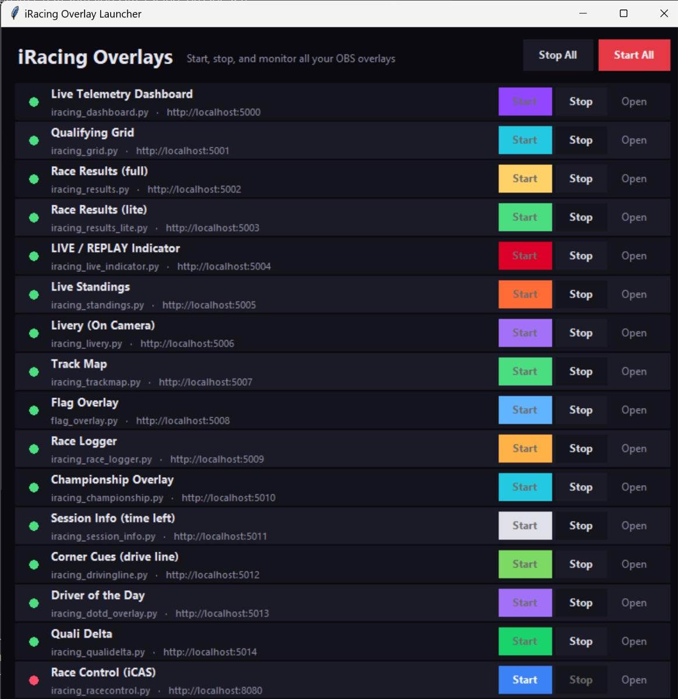
One-Click GUI Launcher
No terminal needed: a small desktop app with a status dot and Start/Stop per overlay, plus Start All / Stop All and a log pane. Self-healing OBS loader pages mean start order no longer matters — sources reconnect on their own after a restart. It even includes a Corner Cues driving aid (turn direction, severity and apex-speed estimates) for sessions where the racing line is disabled.
launch_gui.bat 15 componentsiCASControl — the stewarding dashboard

Beyond the broadcast graphics, the project bundles iCASControl, a full race-control / stewarding console in the spirit of iRaceControl. Unlike the overlays it is not an OBS source — it is a full-screen control panel you open at localhost:8080. It gives a race director an animated track map, a complete live-timing table, and an incident log with a full steward decision workflow.
-
Swappable data source Runs identically on live iRacing telemetry, a built-in GT3+GT4 race simulator (works on any OS, no iRacing needed), or replay of a recorded
.jsonllog. It tries iRacing first and falls back to the simulator automatically — then switches to live data on its own once iRacing starts. -
Steward decision workflow Select an incident and record a decision — Noted, Investigating, No Action, Race Incident, Drive Through, Stop/Go, Time Penalty or DSQ — with per-car actions (0x, notify, wave-around, end-of-line) on the side.
-
Race-control commands Deploy/end the pace car, open or close the pit lane, wave lapped cars, and post red/green flags — with the real circuit map for 200+ bundled tracks shared from the overlay library.
-
Honest about its limits v0.1 is a working foundation. Live timing, the track map, the incident log, gaps, pit detection and flag handling work fully in simulator and replay; on live iRacing the SDK does not expose per-car incident counts or admin messages, so those steps are stewarded manually for now. The Sequencer, Auto-Steward and PDF/CSV exports are on the roadmap.
Everything is open source and free to use. The track files, manufacturer logos and sample race logs are shared between the overlays and iCASControl, so any circuit you have for the track map is also available to the steward. If you run a league or stream your own races, you can clone it, run pip install -r requirements.txt and be live in OBS the same evening. For the build story and our streaming-PC setup, see the DIY page.
👥 Community & Utilities
Liveries, content managers, fuel calculators, and other essential tools
Race Pace (Automobilista 2)
Third-party companion app that layers a structured career experience on top of Automobilista 2 — seasons, contracts, and progression — while Reiza's official in-game career mode is still targeted for later in 2026.
overtake.ggTrading Paints
Browser-based tool for managing, uploading, and downloading custom liveries across many sims. The go-to platform for custom car designs.
tradingpaints.comContent Manager (Assetto Corsa)
The essential mod and content manager for Assetto Corsa. Manages cars, tracks, weather, and mods with a polished interface.
assettocorsa.clubFuel Calculators
Online tools for F1, AMS2, and other sims to plan fuel loads and stints. Essential for race strategy in endurance events.
simracingtelemetry.comFOV Calculator Tools
Web calculators for field-of-view settings in many racing sims. Get the correct FOV for your screen size and seating distance.
simracing-pc.de🤖 AI Video & Content Creation
Turn your replays into polished videos — from automated recording to AI-powered editing
iRacing Replay Director
The most automated replay-to-video tool. Analyzes your replay for spins, crashes, and overtakes, captures scenic track views for intros, records the full race with leaderboard overlays, and exports to video via OBS. Open source.
GitHubiRacing Sequence Director
Create cinematic replay edits by placing "nodes" at points in the replay — camera angle, driver focus, timestamp. Sequence Director plays the sequence back while OBS records. Supports multi-camera cuts and time-skips.
GitHubiRacing Replay Capture
Command-line tool that controls iRacing replay playhead and cameras while triggering OBS recording per sequence. Ideal for batch processing multiple replays into individual video files.
GitHubiRacing Replay Control
Automates camera changes during replay viewing or recording. Configure which cameras switch when, creating a TV-style broadcast feel without manual intervention during the recording pass.
GitHubOpusClip
AI-powered highlight extraction. Feed it your raw race footage and it automatically finds the best moments (overtakes, incidents, close battles), clips them into 30–60 second shorts with captions and hooks. Perfect for YouTube Shorts and social media.
opus.proCapCut
Comprehensive AI video editor with auto-captions, auto-cut for long videos, background removal, and smart editing. The AI features speed up production by 50–70%. Free tier available with powerful capabilities.
capcut.comDescript
Edit video by editing the transcript. AI removes filler words, creates chapters, generates summaries, and can even clone your voice for corrections. A unique approach to post-production that speeds up commentary editing.
descript.comOBS Studio
The industry standard for screen recording and streaming. Free, open source, and works with all the iRacing replay automation tools. Essential backbone of any sim racing video production pipeline.
obsproject.com🎤 AI Race Engineering
AI-powered assistants that help you during and after races
PitGirl
A VoiceAttack + ChatGPT-powered virtual race engineer for iRacing. Voice interaction for event lookup, sign-up, race strategy, and real-time information — all hands-free, perfect for VR. Integrates with OBS and Twitch.
OpenAI CommunityRaceCrewAI
AI-based virtual race engineer providing real-time strategy advice during races. Analyzes telemetry data and race conditions to give you pit window suggestions, tire strategy, and fuel calculations.
racecrewai.comSimulator Controller
Open-source GPT-powered virtual pit crew. Uses the latest AI technology to create a realistic race engineer experience. Supports multiple sims with voice interaction and real-time strategy recommendations.
GitHub💡 The AI Video Workflow
From replay to YouTube in 4 steps
-
Step 1: Race & Save Replay Race in iRacing (or any sim). The replay file is saved automatically after each session.
-
Step 2: Automated Recording Use iRacing Replay Director or Sequence Director to auto-play the replay with cinematic camera angles while OBS records the output to an MP4 file.
-
Step 3: AI Post-Production Feed the raw footage into OpusClip for automatic highlight clips, or use CapCut/Descript for full-length editing with AI captions, auto-cuts, and smart transitions.
-
Step 4: Upload & Share Upload to YouTube, create Shorts from OpusClip highlights, and share on social media. AI tools can even generate thumbnails and titles.
💻 Complete Software & Tools Directory
| Tool | Category | Description | Website |
|---|---|---|---|
| Sim Racing Telemetry | Telemetry | Cross-platform telemetry with graphs, time-difference analysis, track overlays | Link |
| Coach Dave Delta | Telemetry | Telemetry, setups, reference laps, AI insights for iRacing, ACC, F1 | Link |
| JRT | Telemetry | Advanced timing, tire-wear and stint-focused analysis | Link |
| VRS Telemetry Logger | Telemetry | iRacing telemetry logger for VRS analysis platform | Link |
| Garage61 | Telemetry | iRacing-focused telemetry, second screen/phone display | Link |
| Popometer | Telemetry | Visual telemetry with line-analysis for ACC, LMU | Link |
| MoTeC i2 | Telemetry | Professional-grade race telemetry, industry standard | Link |
| Stint Analyzer | Telemetry | Open-source stint and tire-wear planning | Link |
| RaceLab | Overlay | Modern overlays: relatives, standings, fuel, radar, head-to-head | Link |
| iOverlay | Overlay | iRacing overlays: relatives, multiclass, fuel, Twitch chat | Link |
| Kapps Overlays | Overlay | Customizable iRacing overlay widgets | Link |
| RacePulse | Overlay | Real-time telemetry overlays for iRacing, LMU, F1 | Link |
| SIMRacingApps | Overlay | Web-based second-screen overlays for multiple sims | Link |
| Bo2-Official Overlays | Overlay | Community SimHub overlay pack for iRacing | Link |
| SimHub | Dashboard | Dashboards, overlays, haptics, LEDs, Arduino — supports many sims | Link |
| RS-Dash | Dashboard | Mobile & Windows telemetry dash/HUD for ACC, AC, AMS2, F1 | Link |
| Lovely Dashboard | Dashboard | Open-source dashboard framework, SimHub-compatible | Link |
| irFFB | FFB | FFB-tuning profiles for iRacing grip and feel | Link |
| MAIRA | FFB | iRacing FFB analysis and tuning tool | Link |
| Resize Raccoon | Haptics | Haptic feedback optimization, FFB tuning, LED control | Link |
| MOZA Tuner | FFB | Official FFB tuning for MOZA Direct-Drive bases | Link |
| Simagic Tuner | FFB | Official tuning for Simagic Direct-Drive bases | Link |
| Fanatec DD-Tooling | FFB | Official DD-tuning utilities from Fanatec | Link |
| Track Titan | Coaching | AI-based overlay showing where you lose time | Link |
| VRS | Coaching | Training modules, telemetry, and reference data | Link |
| CrewChief | Spotter | Voice spotter for positions, warnings, messages | Link |
| Discord | Communication | Team/league voice chat and community platform | Link |
| iRaceControl | Race Control | League stewarding: live tracking, incidents, auto-steward, sequencer, reports | Link |
| Racey | League Ops | All-in-one league platform: race control, scoring, AI stewarding, broadcast overlays | Link |
| Trading Paints | Liveries | Custom livery management and sharing platform | Link |
| Content Manager | Mod Manager | Essential mod/content manager for Assetto Corsa | Link |
| Fuel Calculators | Utility | Online fuel load and stint planning tools | Link |
| FOV Calculator | Utility | Field-of-view calculator for correct sim settings | Link |